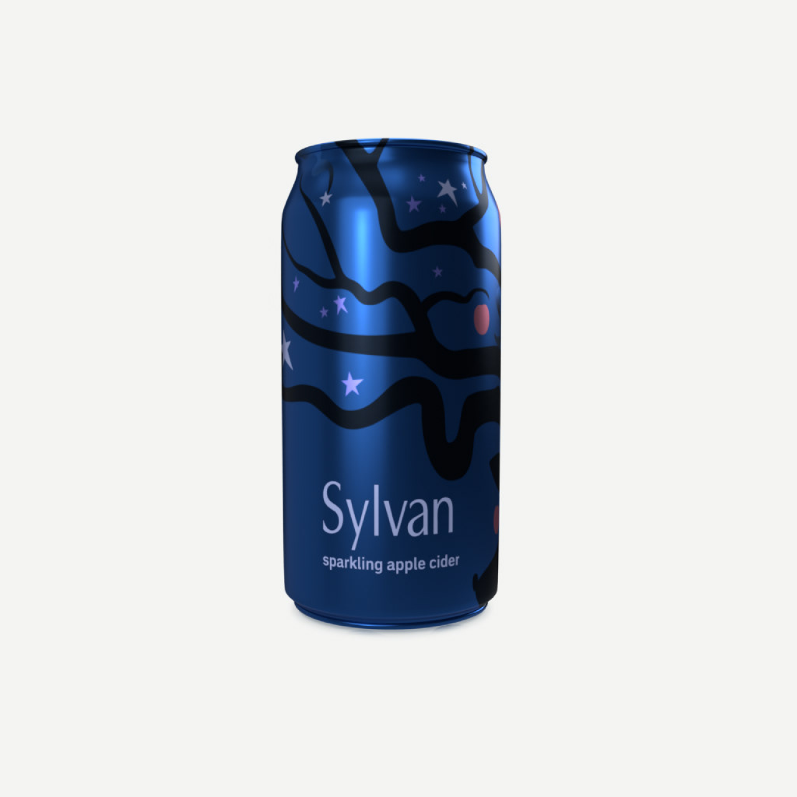
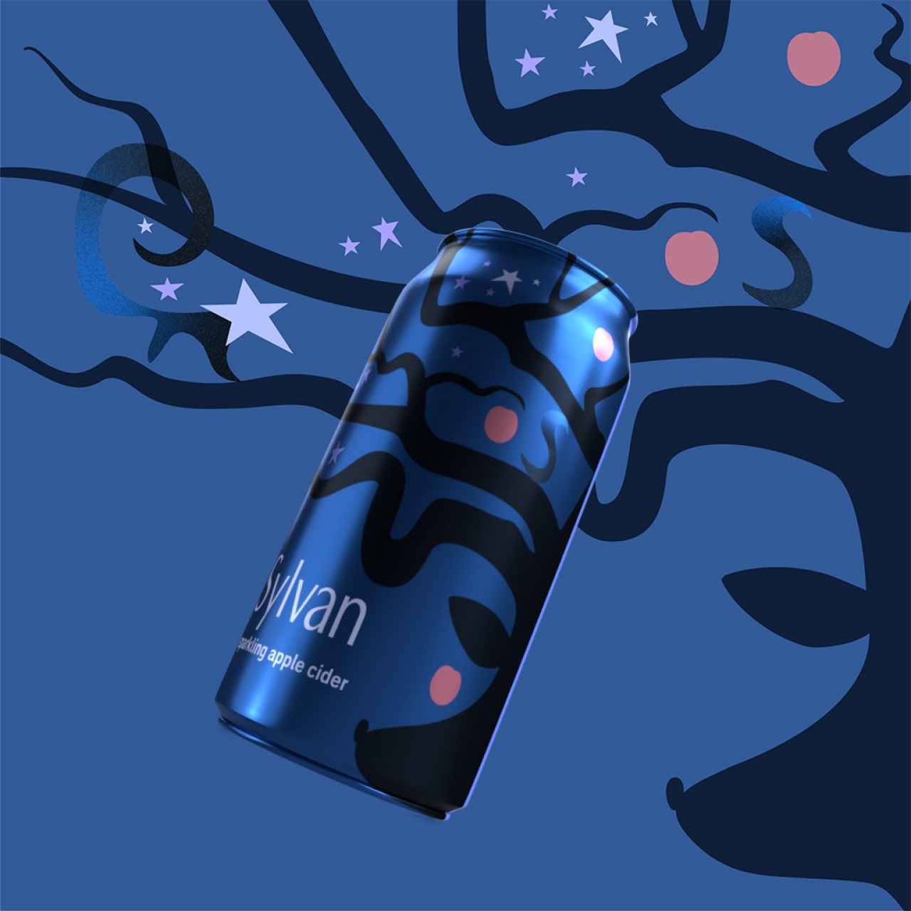
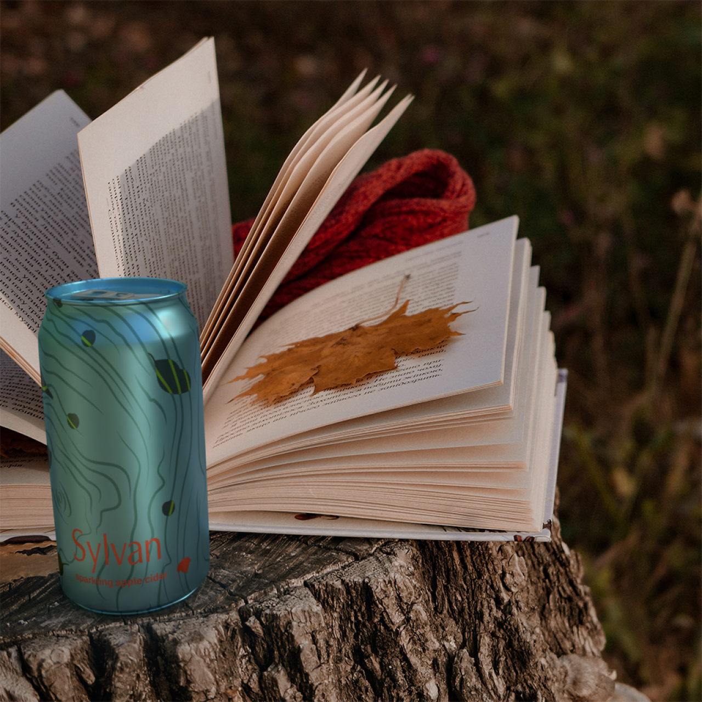
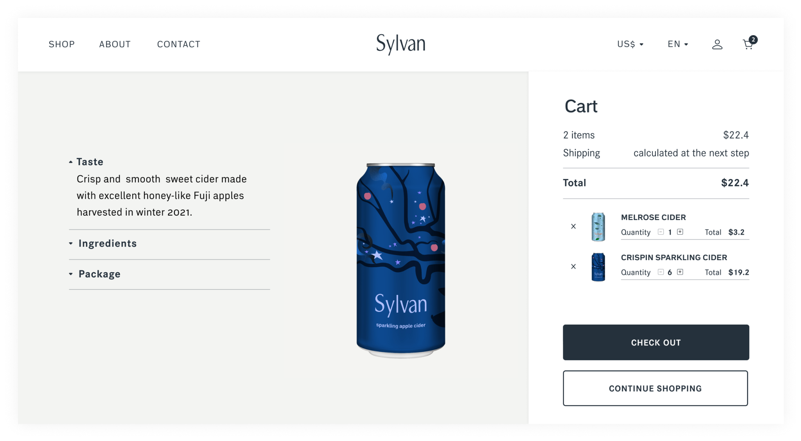
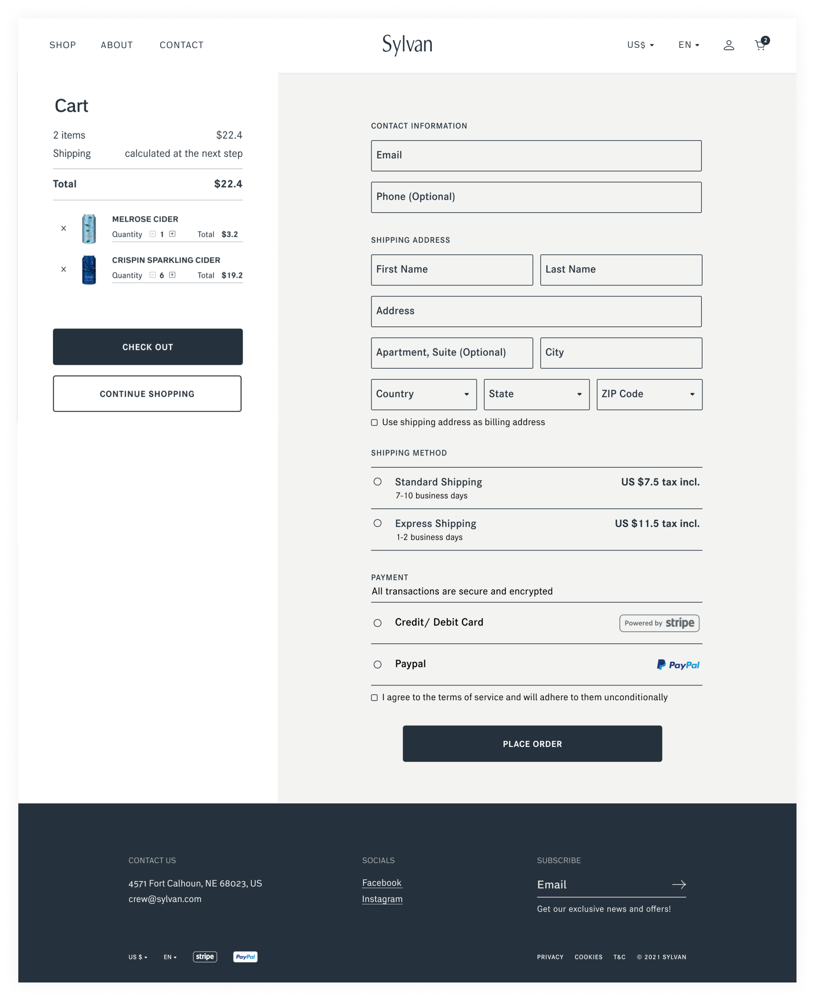

Sylvan
Веб-сайт электронной коммерции

Overview
Sylvan — это бренд органического яблочного сидра, в котором подлинное мастерство играет важную роль, а сезонность проявляется на всех этапах, начиная от сбора фруктов и заканчивая консервированием напитков.
Мои обязанности
- Branding
- Packaging design
- User Research
- Information Architecture
- Wireframing
- Prototyping
Timeline
- Nov 2020
Tags
- mobile app design
- 2021
Master Brand Logo


Packaging
Three packaging designs as well as a special annual edition celebrate three main apple harvests of the year: an early-season harvest, a mid-season harvest, and a late-season harvest.






Besides a pack of twelve ciders of mixed apple varieties the special annual edition includes a hoodie and tote bag.


Website
The primary goal of designing a website was to expand the brand awareness beyond the local area and increase client reach by launching an online store.
Sitemap

Wireframes
-
Landing page

-
Listings page

-
Product page

-
Cart menu and checkout page

Style Guide


Responsive Layout
Landing page
Sylvan’s USP focuses on manufacturing a superior product that doesn’t harm the environment by using only raw, locally grown ingredients and fully recyclable packaging. They don’t try to accelarate the fermentation process as it plays an important role in richness and depth of flavor of the final drink. As a result the whole production cycle may take up to a year depending on a harvesting time and apple varieties.
Strong ties to nature and passing of time is what makes this brand truly unique. This message can be read in every little detail: the website imagery, packaging design, product descriptions and even logo itself which etymology refers to forests.

As the range of products is relatively small, I decided to avoid using product categories and show a few items on the landing page with a clear CTA that navigates customers to the listings page with convenient filtering feature.

Listings page
The product thumbnails are large with a precise description revealed on hover which gives users enough context to choose an option that accommodates their needs.

Product page
Here a user can learn more about a product looking through specifications and reviews. A sticky container on the right enables users to quickly add a product to cart whenever they make up their mind.
Checkout process
The key information such as a picture, title, quantity and cost of items is displayed in the cart section on the right. After adding items to their cart a user can check and make changes to their order if needed.

The total cost is calculated after the shipping method is chosen.
The checkout process consists of two columns: the cart on the left where users can always see the summary of their order and the checkout form on the right.

Conclusion
The biggest challenge of this app was its data-heavy content. In the beginning, I didn't know how to reveal the data gradually: from a broad overview to the finest details, so that a user won't get too overwhelmed with it. After several iterations, I managed to create quite a minimalist layout without sacrificing the user experience.
Another thing to consider was how to make the process of cooking more enjoyable and easy for a user. After all, for many users who are used to eat meat changing their eating habits can be hard and sometimes even cause frustration. That's why apart from shooting a video for the recipe, I decided to design a visual list of ingredients.